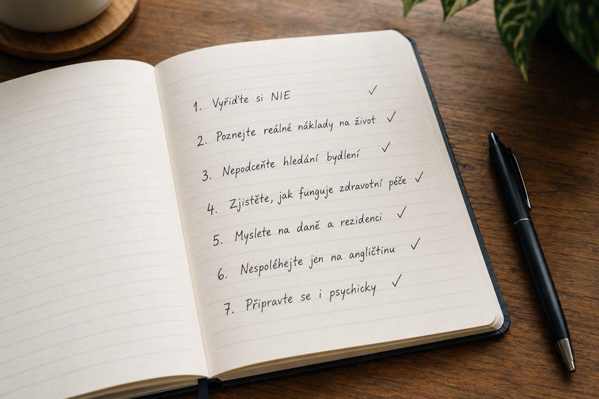

Stěhování
Než se přestěhujete do Španělska: 7 věcí, které je dobré vědět předem
Dobrá příprava rozhoduje o tom, jestli bude přesun hladký, nebo plný nepříjemných překvapení. Shrnuli jsme sedm oblastí, kterým se vyplatí věnovat pozornost ještě před odjezdem.
